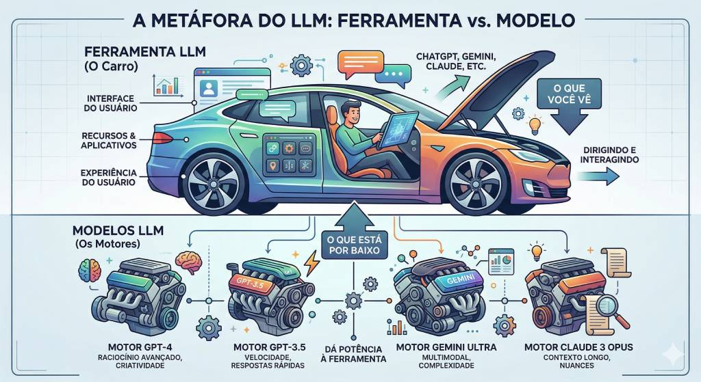

Ferramentas de LLM
Análise comparativa das principais plataformas de IA generativa: características, preços, pontos fortes, limitações e alertas de segurança.
O que são ferramentas de LLM
Ferramentas de LLM são ambientes que possibilitam a interação do usuário com a IA de forma simples e funcional. Pense nelas como "interfaces" que permitem conversar com os modelos de inteligência artificial sem nenhum conhecimento técnico.
A distinção importante: a ferramenta é o aplicativo que você usa (ChatGPT, Gemini, Claude); o modelo é o sistema matemático que processa e gera as respostas. Uma mesma ferramenta pode oferecer múltiplos modelos com capacidades diferentes. Isso será detalhado no próximo tópico.
O infográfico abaixo ilustra essa relação: a ferramenta é como o carro que você dirige — a interface com que você interage — enquanto o modelo é o motor por baixo do capô, responsável por processar e gerar as respostas.

As principais ferramentas
Dados de abril de 2026. Preços e planos mudam com frequência — verifique os sites oficiais antes de contratar.
Guia rápido: qual ferramenta usar?
Na dúvida, use esta tabela como ponto de partida:
| Situação | Ferramenta Recomendada | Por quê? |
|---|---|---|
| Redigir ofícios, minutas e despachos | ChatGPT ou Claude | Melhor geração de texto em português formal |
| Analisar documentos longos e complexos | Claude | Janela de 200k tokens, respostas estruturadas |
| Pesquisar legislação e jurisprudência | Perplexity | Cita fontes verificáveis, acesso em tempo real |
| Estudar múltiplos documentos do TRE-RN | NotebookLM | Análise cruzada de até 50 docs, gratuito |
| Integrar IA ao Gmail, Docs e Drive | Gemini | Integração nativa com Google Workspace |
| Produtividade no Office (Word, Excel) | Copilot | IA dentro do ecossistema Microsoft |
| Experimentação sem custo | DeepSeek | Gratuito (atenção à privacidade dos dados) |
| Informações em tempo real | Perplexity | Acesso a dados atualizados da web |